项目概览
基于刘慈欣短篇小说《山》改编的 3D 探索解谜游戏。玩家扮演封装着硅基科学家波塞冬博士意识碎片的微型机器人「泡灵」，在深海废墟中苏醒，收集记忆碎片，解开科考站遗迹的谜题，最终将文明的火种传回地心。
项目由 5 人团队开发，我担任主策划 / 项目负责人，负责项目管理与排期、策划案与叙事文案、UE 工程搭建与测试打包、场景后处理与程序化自发光，并主持空间叙事走查。进入冲刺期后，同步推进泡世界五城空间设计、纪念碑谷 Low Poly 美术重构、三种声学空间的音频音效落地与 Tripo AI 3D 资产生成管线。
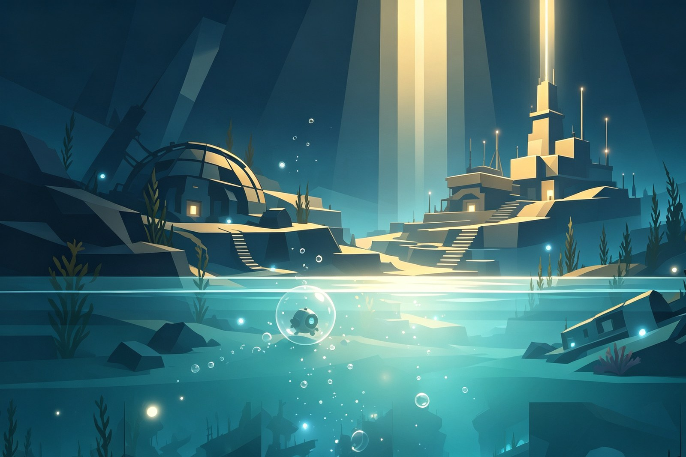
一、世界观：泡世界与无形岩
泡世界与硅基文明
宇宙深处，有一颗与地球大小相仿的行星。它的地核是空的，形成了一个半径约三千公里的球形空洞。在这个空洞中，诞生了硅基文明——泡世界。
- 生命形态：肌肉和骨骼是金属的，大脑是超高集成度芯片，电流和磁场是血液，放射性岩块是食物。
- 生存环境：没有气体，没有液体，整个空间被坚硬岩层包围。泡世界没有重力，所有生物和物体悬浮在空间中。
- 核心矛盾：空间守恒。泡世界的空间半径只有三千公里，挖洞不能增大空间，只是改变空间的位置和形状。整个文明史就是一部血腥的空间争夺史。
- 文明内部分裂：探险派主张继续向外挖掘，寻找「密度为零的天堂」；保守派主张封死所有向外通道，避免「无形岩」的诅咒。两派矛盾贯穿整个文明史。
大挖掘时代与无形岩
泡世界科学家「牛顿」在探险泡船上发现了万有引力，密实宇宙论崩溃。「太空宇宙论」预言岩层之外存在密度为零的无限空间。空间——这个泡世界为之征战了无数世代的最宝贵之物，竟然可能是无限的。前所未有的探险浪潮席卷整个文明——大挖掘时代开始。
终于，最前沿的探险泡船钻透了最后一层岩壁。涌入的不是真空，不是天堂，而是一种他们从未见过的东西——液体。第一批接触它的探险者全部丧生，硅基生命的电路在液体中瞬间短路。泡世界将这种致命物质命名为「无形岩」。他们后来发现，头顶那片蓝色的、流动的、致命的广阔空间，是一片覆盖整个星球表面的海洋。泡世界之外，是无尽的深海。
亚特斯科考站与泡灵计划
硅基文明没有被「无形岩」的恐怖吓退。经过漫长的技术积累，他们在临近海底的岩床下建立了第一个深海前沿科考站——亚特斯（Arth's Deep）。
亚特斯与泡世界是物理完全隔离的两个独立空洞。挖掘完成后通道已用碎岩回填，两者之间只有信号塔的电磁数据通道，没有物理通路。海水倒灌只会淹没亚特斯，不会危及泡世界。
亚特斯最重要的研究，是由波塞冬博士主持的「泡灵计划」——一种微型机器人，通过控制一层薄薄的空气泡来隔绝海水，利用气泡的浮力在水中移动。泡灵的核心能力是意识分裂：封装在泡灵中的意识碎片可以将自身的一部分再分裂出去，形成临时的「子泡灵」，用于同时操作多个位置或触发远处的机关。
灾难与游戏时间线
一颗陨石坠落在亚特斯不远处的海面上，冲击波撼动海底岩床，岩壁断裂，海水倒灌。亚特斯在数分钟内被淹没，硅基科学家全部短路丧生。波塞冬在最后一刻启动泡灵原型机，将自己的部分意识碎片封入其中，释放入海水。最后一道指令：「找到信号塔。点亮它。让地心知道——无形岩之上，还有更广阔的世界。」
泡灵在海底沉睡了数十年至数百年。泡世界以为亚特斯全员牺牲，信号塔静默已久。
泡灵在黑暗中苏醒。
剧情设定：泡纪元 33380 年两派之争
泡纪元33380年，以波塞冬为代表的亚特斯探险派有了一个震惊世界的发现——无形岩。随后数百年间，探险派不断寻找在无形岩中前行的方法，与此同时，泡世界中探险派和保守派的矛盾也进一步加剧。
| 阵营 | 立场 |
|---|---|
| 保守派 | 泡世界原本没有保守派，直到一小部分人发现探险的「代价」是身边朋友的性命，是越来越逼仄的生存空间，以及他们再也回不去的，家。 探险派是一群没有感情的疯子，他们默许一切生命为理想葬送，哪怕是他们的至亲，哪怕是他们自己，他们根本不关心泡世界已经成了什么样，这个生养他们的地方已经被他们幼稚的幻想作践得一片狼藉。 |
| 探险派 | 「你不想知道这堵无限延伸的高墙背后是什么吗？山在那里，我们当然要翻过去。所以我们开启了『登山计划』，有很多人反对我们，但也有很多人重新加入了我们，我们不在乎保守派怎么想，保守派只不过是忘记了初心的探险派而已，我们会把山那边的信息带回泡世界，我们相信山那边有更广阔的泡世界。」 「我们从来没有放弃过任何一个同胞，也没有放弃过泡世界，只是探险的路上必然会有一些牺牲，我们会找到一片更广阔的天地。」 |
人物档案
| 角色 | 档案 |
|---|---|
| 波塞冬 | 亚特斯的创立者，探险派代表。 「我们就快登上这座山了。我制造了一批带着我意识碎片的『泡灵』，如果我没办法亲眼看到山那边的世界，它们会把我的一部分带过去。朝闻道，夕死可矣。」 「我本已打算退出『登山计划』，我去看过纪念碑，有一个碑上刻着我的挚友的名字——牛顿。临走前我在旁边把我自己的名字也刻上去了。」 「我们还是在山那边的世界再见吧，你可以再发现一次『思乡梦游症』和你的『引力理论』。」 |
| 亚特斯 | 与泡世界分隔开的探险者基地。 |
| 纪念碑 | 保守派为纪念因「登山计划」逝去的同胞以及反抗探险派而建造的一片碑林。据说是阿基米德为纪念挚友牛顿逝去的而建。 |
| 牛顿 | 与波塞冬是挚友，也是其老师。发现了「思乡梦游症」是因为万有引力。也正是因为这个理论，他成了狂热的探险派，「登山」的概念也是他提出的。 「他说他一定要翻过这座困住他们世世代代的高山，哪怕他没能翻过也一定有后人能翻过，而波塞冬就是这样一个后辈。」 |
| 阿基米德 | 波塞冬的学生，追随牛顿和波塞冬的脚步而成为探险派，以他的学术科研能力无论选择哪一方都会是对面最强劲的敌人，因此他是保守派施行法令时最忌惮的一个存在。 也因其出色的学术能力获得牛顿和波塞冬的青睐，三人成为挚友，在牛顿逝去后一心为实现老师的夙愿进行探险派的科研探索，在泡世界建立了探险者中心，带领了一群以波塞冬为精神领导的泡世界内部的探险教徒，长期接收波塞冬从亚特斯传回的信息。 |
泡灵个体档案
泡灵在一开始主要服务于亚特斯向无形岩的小规模探索，为此制造了钻井平台向海底输送泡灵，001、002都成功传递了许多无形岩内的信息，帮助亚特斯及泡世界了解这个山后的世界。但由于泡灵储存的信息量有限，若是丢失了重要基准信息，可能迷失在无形岩中，因此波塞冬在无形岩内设置了一些帮助泡灵寻路的「光点」。
灾难发生时波塞冬接收到泡灵带回亚特斯的最后一条信息，无形岩之上有更广阔的世界，他立刻把所有研发的成品、半成品泡灵全部启动了，希望确定这个世界的存在并将信息传递回泡世界。
泡灵散落在无形岩各处，苏醒后得到的唯一指令就是前往信号塔传递信息，但由于储存的波塞冬的意识碎片有差别，所以每个泡灵似乎都有自己的想法。
| 泡灵 | 档案 |
|---|---|
| 008 | 向上登上这座无形岩为我们造的新的山吧，你明知道把这样的信息给阿基米德是没有意义的吧波塞冬，他是个保守派，如果你不在了他是不会继续前往新世界的，不如我们自己去看看新世界吧。 |
| 011 | 泡世界的同胞会因为这个信息而振奋的！我们终于发现了The New World（TNW）！ |
| 016 | 牛顿已经是过去式了，把信息传回泡世界带来的只有新的灾难，要登山就自己去登，不要再像亚特斯，拉上所有人陪葬...... |
| 023 | 我终于成功回到了泡世界！去找阿基米德吧。但似乎这里的人并不关心TNW，这座纪念碑是......，上面的名字似乎比记忆中更多了。......，波塞冬......？啊对了，是我当时写下的。那旁边就是牛顿的名字了吧。嗯？这是......，名字被抹去了？然后这是......，阿基米德......？原来如此，波塞冬，不愧是你的学生。我不能让更多同胞因为这种荒唐的理由去送死了......让后面的泡灵在这里折返也来得及，回...到...亚特斯。这样或许就行了。来吧保守派，现在可以将我处死了...... |
二、核心玩法机制
《泡泡》的机制设计围绕「同一个意识，两种体量」展开。海底与亚特斯是慢节奏解谜探索（在逝者的记忆中慢慢走），泡世界则是快节奏追逐潜伏（在活人的追捕中拼命跑）。慢与快、死与生、回忆与当下，两个场景合在一起，才是完整的《泡泡》。
光点系统：正常与异常分离
光点是核心资源与叙事载体，玩法与叙事完全解耦——这一设计让「引导」和「讲故事」互不干扰：
| 维度 | 正常光点 | 异常光点 |
|---|---|---|
| 玩法作用 | 让泡泡变大 + 加速回能 | 不变大，仅加速回能 |
| 体型计算 | 计入体型控制 | 不计入，不影响泡泡大小 |
| 叙事内容 | 波塞冬本人的记忆碎片（倒叙主线） | 其他泡灵留下的数据残片（隐藏暗线） |
| 叙述视角 | 波塞冬第一人称 | 其他泡灵 / 未知来源 |
| 使用频率 | 高频，用于主线引导 | 低频，剧情补充 |
规则怪谈：两套互相矛盾的规则
分散的剧情碎片通过「规则怪谈」形式讲述：正常光点与异常光点的规则互相矛盾，因为写下规则的人立场不同——探险派中也有保守派与激进派。玩家在不同情况下遵循不同规则，会被引向不同结局。
| 规则主题 | 正常光点（探险派视角） | 异常光点（其他泡灵视角） |
|---|---|---|
| 光点的作用 | 「收集光点，让泡泡变大，找到信号塔传递信息。」 | 「向上走，不要回头，去登山。」 |
| 信号塔 | 「点亮信号塔，让地心知道真相」 | 「不要进入信号塔，不要让他们发现你！」 |
体型控制与意识分裂
传输节点：泡世界的公共交通
泡世界是 Ø80 m 的开阔空洞，城市之间的暴露区是追逐压力最高的地方。为了让玩家有办法穿越它，我设计了传输节点——它替代了早期方案里的「加速管道」：管道要单独教一次、程序也要单独做一套；而传输节点直接 call back 信号塔已经教过的「主泡注入」，玩家零学习成本，程序也只是复用同一个接口。
操作一览
| 按键 | 动作 | 说明 |
|---|---|---|
| WASD | 移动 | 水世界中为泡泡漂浮移动；泡世界中为透明结构球滚动移动（有惯性） |
| 空格 | 上浮 / 弹跳 | 水世界中向上浮动（体积越大浮力越强）；泡世界中短暂跃起 |
| Shift | 加速冲刺 | 短时间提速，消耗能量 |
| F | 分裂 / 召回 / 注入 | 分裂出子泡；再按召回；子泡靠近特定装置时按 F 注入 |
| Q | 信号干扰器 | 泡世界道具，短暂屏蔽定位，争取逃跑时间 |
三、场景与关卡设计
场景构成一条完整的情绪曲线：从孤独苏醒，到逝者记忆中的解谜，再到活人追捕下的奔逃。技能学习遵循三段式——先体验（无谜题）→ 再使用（谜题）→ 后 call back（复用），最终在泡世界的最终追逐中所有技能一起回收，形成高潮。
| 场景 | 尺寸 | 移动方式 | 情绪主题 | 时长 |
|---|---|---|---|---|
| 海底 | 40 × 40 m | 水泡漂浮 | 孤独苏醒 · 微光探索（无谜题） | 6–8 min |
| 亚特斯 | 30 × 30 m | 水泡漂浮 | 逝者记忆 · 悬疑解谜（3 个谜题） | 12–15 min |
| 信号塔 | 独立区域 | 水泡漂浮 | 过渡 · 主泡注入（机制反转） | 过场 |
| 泡世界 | 球形空洞 Ø80 m | 透明球滚动 | 暖金释放 · 追捕潜伏（五城推进） | 25–35 min |
海底：无谜题的教学与氛围
海底是开场，也是唯一完全不设谜题的场景。它承担五件事，全部靠环境与阻碍完成，参考《Inside》的无文字引导——不写一句教程文字，也不放 UI 箭头。
| 功能 | 具体内容 |
|---|---|
| 操作教学 | 移动、上浮、加速、光点收集全部在海底完成，用环境和阻碍教会玩家操作 |
| 技能体验 | 「变大、上浮」的首次体验放在这里，不设谜题，纯粹让玩家感受「变大了是什么感觉」 |
| 环境叙事 | 硅基科学家的金属躯体静默躺在海底、被冲毁的设备、闪烁的应急灯——不用文字，用环境告诉玩家「这里发生过灾难」 |
| 氛围铺垫 | 从完全黑暗到逐渐看到废墟轮廓，视觉节奏从小到大；深蓝水体、悬浮颗粒、微弱体积光 |
| 路径引导 | 光点的位置自然引导玩家向亚特斯入口移动，不需要 UI 箭头 |
区域上分三段：苏醒区（完全黑暗，只有泡灵自身微光，可视范围 3–5 m）→ 开放水域（沙地、岩石、水草、漂浮的外部设备残骸、被冲毁的钻探平台）→ 亚特斯入口（巨大的金属结构残骸，入口破裂，海水从裂缝中涌入）。
亚特斯：三个谜题的技能教学链
亚特斯是解谜核心，三个房间各承担一次技能教学，并在情绪上形成「三峰波浪」，谜题 2 为最高点：
- 谜题 1 · 分裂与压力板（教学）：门前压力板踩上即开门，板上方放一个光点暗示「站这里」。玩家分裂子泡停在压力板上，主体通过——首次通过后子泡自动召回不消耗，降低学习门槛。
- 谜题 2 · 狭窄通道与子泡注入（情绪高点）：通道宽度由 3 m 线性收窄到 1.5 m，初始体积过不去，形成最清晰的「负面示能」，逼出「分裂变小」。子泡注入装置后不可召回，构成一次永久代价。
- 谜题 3 · 易碎地形（机制反转）：起点旁注入装置开门并使主体减重，但易碎岩板沿途故意散布引导光点——吃了会变大、地面碎得更快，即「光点是陷阱」。玩家需要主动克制，与谜题 1、2 的「尽量吃 / 必须分裂」形成反转。
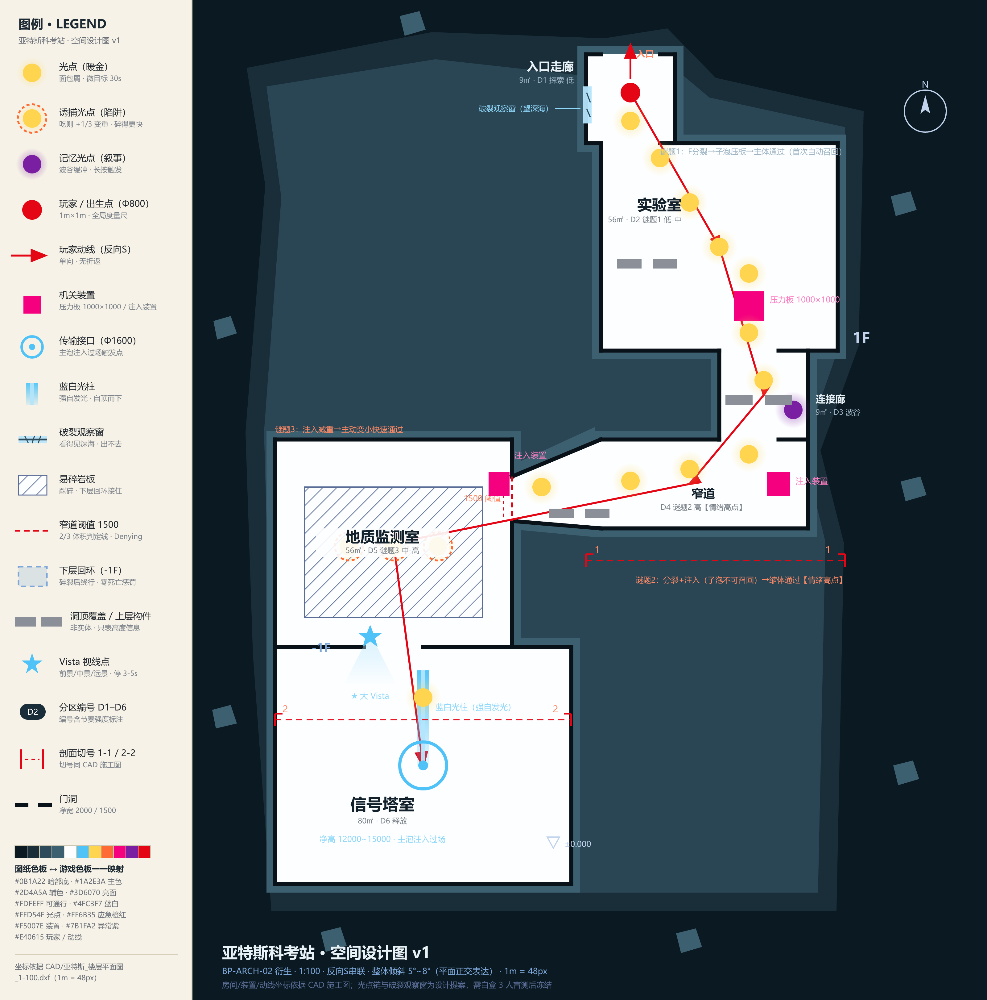
信号塔：机制反转与情绪呼吸点
信号塔是亚特斯与泡世界之间的过渡节点，不设谜题——亚特斯的三个谜题已经把玩家压得够紧，这里需要一次呼吸。玩家进入宏大的塔室，光柱向上，中央有传输接口，环境暗示「把主体注入装置」。
它同时承担一次关键的机制反转：此前按 F 都是分裂出子泡，这一次按 F 是把自己整个交出去。过场动画里，意识沿信号塔传输、穿过岩层、向地心坠落；黑屏，泡世界接收站苏醒。
为什么放在这里
「主泡注入」是泡世界传输节点的前置技能。与其在泡世界里再教一次，不如把它放在这个天然的情绪转换点——玩家在不知情的情况下学会了后面要反复用到的能力，到泡世界第一次见到传输节点时，会立刻明白该按什么键。这是全案「技能三段式」里最关键的一次伏笔回收。
泡世界：五城环形布局与空域追逐
泡世界是 Ø80 m 的球形空洞，五座城市沿空洞内壁环形均匀分布，中央矗立一座中心高塔（Ø6 m × h20 m，全程可见地标），A/B 城与中心之间有一道约 6 块巨岩组成的碎岩带为空域追逐提供遮挡。动线为环形顺时针：出生点 → A 城 → B 城 → C 城 → D 城 → E 城。
| 城市 | 中心坐标 | 平面尺寸 | 方位 | 功能定位 | 难度 |
|---|---|---|---|---|---|
| A 城 | (58, 55) | 16 × 14 | 右下 | 联络居民区（商业街 / 中心广场 / 联络点） | ★☆☆ |
| B 城 | (22, 58) | 14 × 12 | 左下 | 潜伏关卡（观景平台 / 潜伏教学） | ★★☆ |
| C 城 | (20, 25) | 18 × 16 | 左上 | 学术中继城（中继塔 / 三权限谜题） | ★★★ |
| D 城 | (40, 12) | 18 × 10 | 顶部 | 工业学术城（工业区 / 阿基米德实验室 / 学术街） | ★★★☆ |
| E 城 | (62, 22) | 20 × 16 | 右上 | 纪念碑交付城（中心广场 / 探索者中心 / 最终追逐） | ★★★★ |
五段空域追逐：压力阶梯
城市之间的开阔空间是追逐压力最高的地方，由五段空域把整条动线串起来，威胁从教学级逐段升级到最高压力：
| 段 | 起点 | 终点 | 威胁 | 难度 |
|---|---|---|---|---|
| 开场追逐 | 出生点 (40,72) | A 城入口 (58,62) | 敌方舰队 + 泡船 | ★☆☆ |
| 空域 1 | A 城出口 (54,52) | B 城入口 (28,56) | 巡逻泡船 ×1 | ★★☆ |
| 空域 2 | B 城出口 (18,52) | C 城入口 (24,30) | 追击泡船 ×1 | ★★★ |
| 空域 3 | C 城出口 (16,20) | D 城入口 (35,16) | 追击 + 拦截 ×1 | ★★★☆ |
| 空域 4 | D 城出口 (45,15) | E 城入口 (58,26) | 追击 + 拦截 + 扫描 | ★★★★ |
能力体系：四件套随动线解锁
| 能力 | 获取地点 | 功能 | 使用场景 |
|---|---|---|---|
| 体型变化 | 出生点（默认） | 变大 / 变小 | 通过狭窄通道、推动重物、躲避扫描 |
| 干扰器 Q | A 城联络点 | 暂时关闭固定扫描 | 突围扫描封锁区 |
| 分裂 | D 城阿基米德实验室 | 分裂出 1–2 个子泡，独立控制 | 多权限谜题、多路线 |
| 精炼注入 | D 城工业区 | 三子泡同时注入解除屏障 | 精炼厂谜题、深层通道 |
五城分工：同一套机制，五种压力
| 城市 | 一句话 | 拓扑与核心玩法 |
|---|---|---|
| A 城 · 联络居民区 | 被泡船追逐冲刺进入居民区，在商业街和中心广场躲避扫描，找到联络点获取干扰器。 | 轮辐式：中心广场为核心，商业街向外辐射；穿过人流伪装、躲避固定扫描、获取干扰器 Q |
| B 城 · 潜伏关卡 | 在观景平台俯瞰全局，然后进入潜伏关卡练习潜行技巧。 | 线性通道：观景平台 → 潜伏关卡；利用阴影和建筑遮挡躲避巡逻扫描 |
| C 城 · 学术中继城 | 在学术中继城启动中继塔，完成三权限谜题，打通前往 D 城的通道。 | 双核串联：中继核心塔为核心，学术区环绕；首次引入垂直移动；三权限节点需主体 + 双子泡 10 秒内同时触发 |
| D 城 · 工业学术城 | 在工业区选择路线潜行，在阿基米德实验室获得分裂能力，通过学术街和地下管道前往 E 城。 | 多区串联：工业区（需潜伏）→ 阿基米德实验室 → 学术街（无需潜伏）→ 居民区 → 地下管道；三路线：A 潜行 / B 体型 / C 分裂 |
| E 城 · 纪念碑交付城 | 在纪念碑前的中心广场做出抉择，在探索者中心面对众人围观，最终冲向交付点。 | 极简线性：纪念碑（无追逐、禁止战斗）→ 中心广场 → 探索者中心 → 最终追逐直道 → 交付点；最终追逐 12–15 秒全技能 callback |
通缉与定位系统是泡世界张力的地基：城市外开阔空间持续暴露、实时定位，保守派泡船收到坐标全速赶来；城市建筑群内部信号被屏蔽、隐藏，但存在扫描泡船与固定扫描节点；传输节点内注入传输中无敌。泡船不进入城市建筑群内部——被追上触发 BE2，可从信号塔处继续，同时新增异常光点：「不要回头！」失败在这里不是惩罚，而是继续往叙事里加东西。
五城空间设计图纸
为保证「视线—构图—节奏」可验证，我为泡世界建立了统一坐标系（Ø80 m 球形空洞，西南角 (0,0)、中心 (40,40)），按空间专项细化文档输出总平面图与各城平面图，并用于白盒校验与团队对齐。
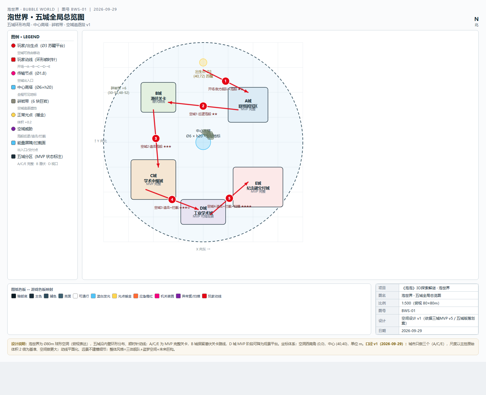
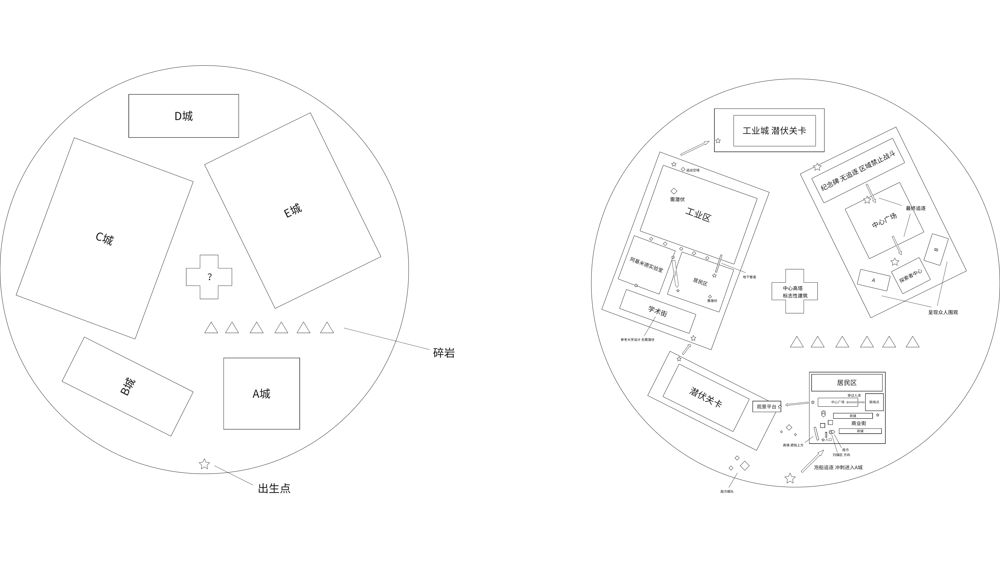
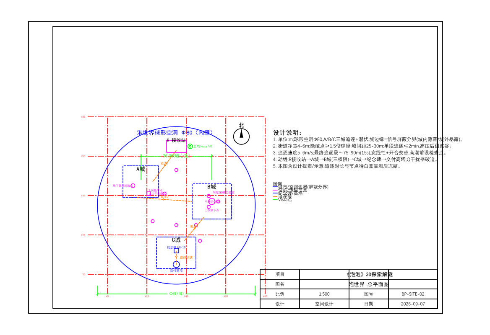
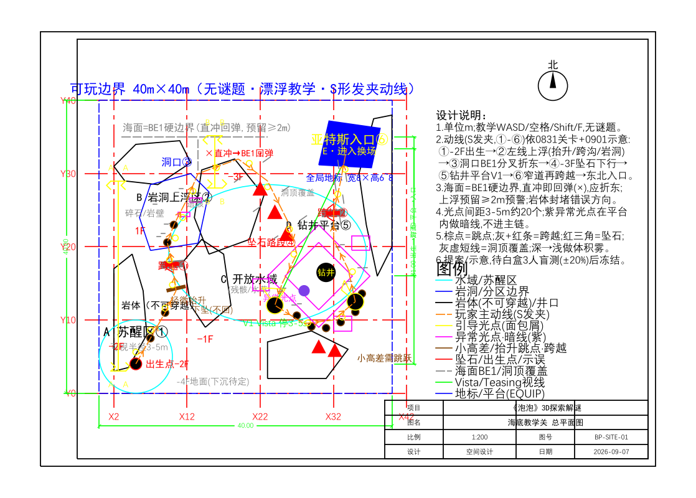
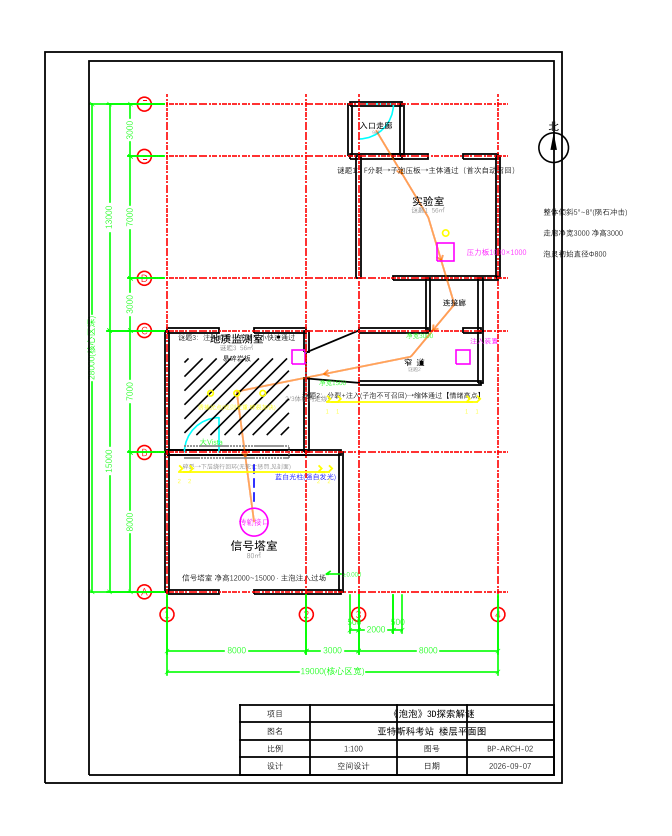
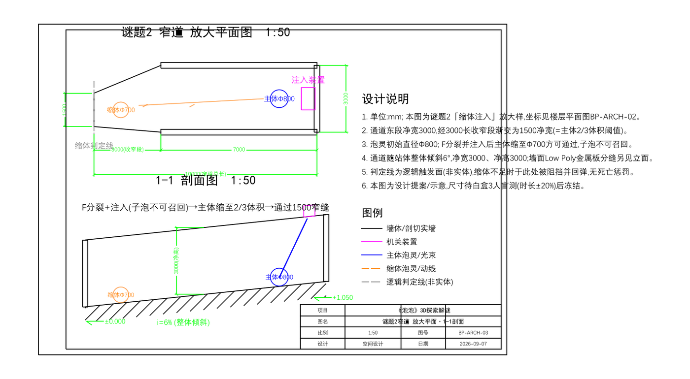
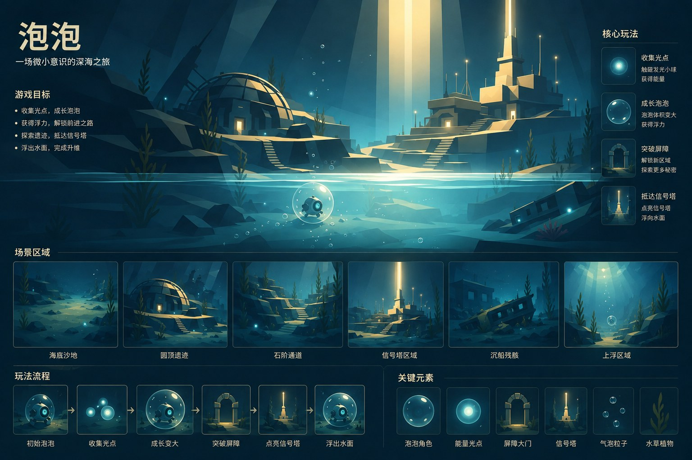
MVP：三城版空间设计
受 1 个月周期约束，MVP 取五城环形布局中的 A 城、C 城、E 城作为完整可玩关卡，B 城与 D 城简化为无建筑观景平台（仅含 Vista 点和传输节点），用于空域段之间的喘息与方向建立。首次通关约 30–35 分钟。
| 节点 | 中心坐标 | 类型 | 功能定位 |
|---|---|---|---|
| A 城 | (58, 55) | 完整关卡 | 联络居民区（扫描潜伏 + 干扰器） |
| B 观景平台 | (22, 58) | 观景平台 | 空域衔接 + Vista（无建筑） |
| C 城 | (20, 25) | 完整关卡 | 学术中继城（三权限谜题 + 分裂能力） |
| D 观景平台 | (40, 12) | 观景平台 | 空域衔接 + Vista（俯瞰 E 城与最终追逐） |
| E 城 | (62, 22) | 完整关卡 | 纪念碑交付城（最终追逐 + 结局） |
三城版本质上是把「五城完整愿景」压到一个月内可交付的形态：保留完整的一段潜伏教学（A 城）、一段核心谜题（C 城中继塔三权限）与一段最高压结局（E 城最终追逐），观景平台提供节奏呼吸，让动线「能从头玩到尾」。
四、结局与自由探索模式
结局：主线交付 + 失败也是叙事
主线结局是「信息交付」：玩家冲入探险者中心高塔顶层，把所有数据交付给泡世界的公共信息网络。数据公开的瞬间，全泡世界的信息终端同时亮起——保守派已无力回天，发言人只在广播里留下一句「……希望你知道自己做了什么。」终章演出后，字幕落下。
失败结局不是「读档重来」。被泡船追上会触发 BE2，玩家可从信号塔处继续，代价是新增一条异常光点：「不要回头！」；在纪念碑之后被保守派逮捕则触发 BE3——「探险派？保守派。」。两者都把失败转化成了叙事增量：玩家不是被踢出游戏，而是多拿到一段别人的立场。
调性：悲壮，但不绝望
《泡泡》的结尾不是皆大欢喜，而是「使命完成，道路仍长」。探险派与保守派的矛盾被完整呈现，却不被解决——保守派妥协了，但没有被说服。这是原著《山》留给故事的态度：探索从未止步，也从不轻松。
通关后：自由探索模式
主线结局后，保守派妥协、警戒解除，游戏自动进入自由探索模式。它是一个纯粹的情绪收束空间，不再有任何压力源：
- 全城自由通行：A / B / C 三城全部可以自由进入，没有追逐、没有潜伏、没有扫描
- 城市外自由移动：不再有泡船追捕，玩家可以自由滚动穿越整个泡世界，观察城市之间的空间与漂浮碎岩
- 纪念碑互动：C 城纪念碑可以靠近查看，每一个名字都能触碰，显示该探险者的简短生平
- 阿基米德实验室：B 城的实验室开放探索，里面有他的研究笔记与浮力实验装置（彩蛋：潜水艇早期设计图）
- 接收站回顾：回到起点接收站，工程师会与玩家对话——「波塞冬博士！感谢你对科学事业的付出！」
五、叙事动线：从苏醒到「探索从未止步」
《泡泡》的叙事不靠旁白交代，而是靠玩家自己撞见的两类文本：一类是光点里的记忆碎片，一类是沿路刻下的规则。后者是全案最有意思的设计——正常光点与异常光点会给出互相矛盾的规则，因为写下规则的人分属探险派的保守派与激进派。玩家先照做，再发现两套规则打架，最后得自己判断该信谁。
以下是「叙事动线 v1」（2026-10-05 定稿）中摘出的实际剧本。左列是触发时机，右列是玩家读到的东西；其中蓝色加粗的是规则怪谈文本，其余是角色台词与环境碑文。
WASD 移动 · 空格跳跃
按 Shift 加速
这段动线想做到的三件事
- 教学藏在叙事里：海底那段同时是教程和开场——「不要离开气泡」「触碰光点」既是世界观台词，也是操作引导，玩家不会觉得被教程打断
- 规则先给、矛盾后到：玩家先照规则做（收集光点让泡泡变大），随后才发现异常光点给出的规则完全相反（向上走、不要回头）。冲突不靠旁白解释，靠玩家自己撞上
- 结局的台词由玩家自己按出来：最终追逐里「朝闻道……／夕死可矣。」与「别再往前了。」交替出现，玩家每按一次前进，都是在两派之间再站一次队
六、视觉风格与美术方向
整体调性是「压抑中的微光，悲壮中的希望」。海底与亚特斯以深蓝、黑暗、工业废墟为主，情绪压抑；泡世界以暖金、淡蓝、发光城市为主，情绪释放但不欢快。整体色调克制，不使用鲜艳彩色。泡世界的建筑形态参考原著「地核中是失重的，我们的城市就悬浮在那昏暗的空间中……远看去，像一团团发光的云」。
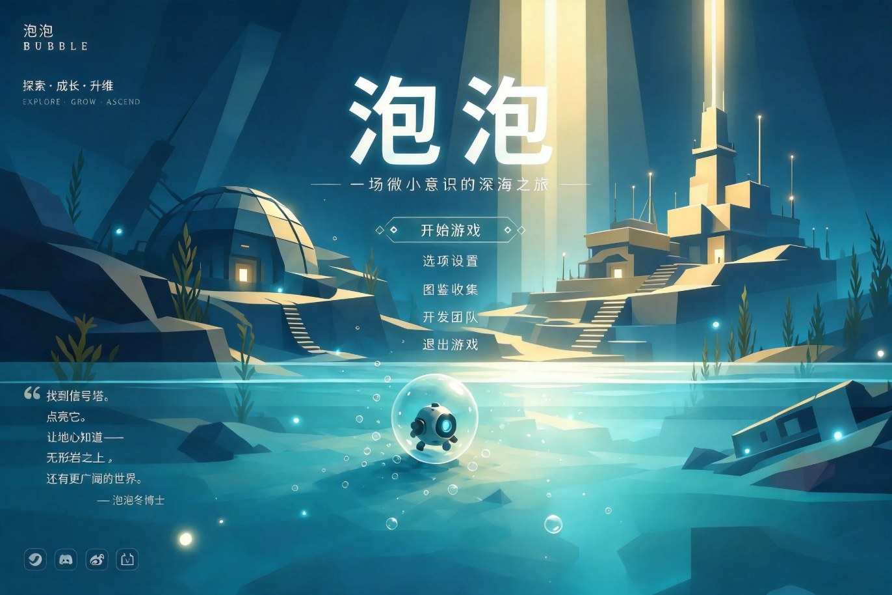
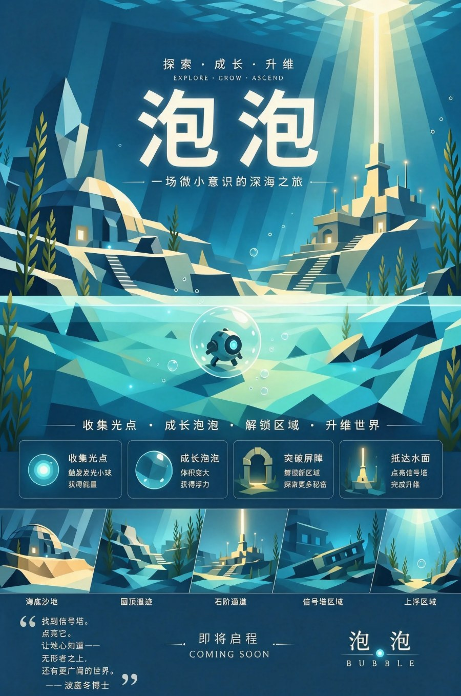
Low Poly 重构：纪念碑谷风格化美术
面对 1 个月周期，美术方向最终选定纪念碑谷 Low Poly 风格重构版——不是「简化版写实」，而是「完整的风格化美术」。用最低的建模和材质成本，通过色彩构成、光影方向、空间构图、自发光氛围传递情绪节奏，同时建立强烈的视觉辨识度。
| 原则 | 说明 |
|---|---|
| 风格先于内容 | 第 1 周先做风格验证小场景，色板 / 材质 / 光照 / 构图定死后再批量生产。风格不统一，宁可不做 |
| 几何化一切 | 所有建筑、道具、地形用基本几何体（立方体 / 棱柱 / 球体 / 八面体）组合表达，拒绝有机复杂形态 |
| 光影和色板救场 | Low Poly 没有纹理细节讲故事，情绪完全靠大色块对比、光影方向、色调变化、自发光氛围传递 |
| 模块化极致复用 | 走廊 3 种、A 城建筑 5 种、岩石 5 种、碎片 5 种一次制作多次调用；全游戏 49 项资产中可复用模块占比 ≥60% |
全游戏只用 8 个全局材质球（M_金属暗 / 金属亮 / 岩石 / 发光体 / 玻璃 / 水草 / 渐变天空 / 特效占位）+ 6 套场景后处理（海底 / 亚特斯 / 信号塔 / 泡世界 / 纪念碑 / 交付中心）。面数红线：单模块 ≤300 面、单资产 ≤200 面、小物件 ≤50 面——Low Poly 天然 60fps+，性能压力可控。
全局色板与材质规范
| 用途 | 色值 | 使用场景 | 备注 |
|---|---|---|---|
| 海底主色 | #0D3B4C | 海底地形、远景、暗部 | 深蓝绿，偏冷 |
| 亚特斯主色 | #1A2E3A | 金属墙面、走廊暗面 | 深灰蓝 |
| 泡世界主色 | #1A1408 | 洞壁、远景、暗部 | 暗金褐 |
| 泡灵暖金 | #FFD54F | 玩家角色、正常光点、已解锁节点 | 核心强调色，自发光 |
| 异常光点紫 | #7B1FA2 | 异常光点、叙事触发物 | 次强调色，自发光 |
| 应急橙红 | #FF6B35 | 应急灯、警报、危险提示 | 警示色，闪烁自发光 |
| 信号塔蓝白 | #4FC3F7 | 信号塔光柱、传输中、科技感 | 冷光强调色，强自发光 |
| 纪念碑黑 | #0A0A0A | 纪念碑主体、暗部 | 近黑，压抑肃穆 |
七、音频音效设计：用「无声」制造压迫
工程原本零音频资产，在冲刺期为它建起一套从零到出声的声音体系：31 条 48kHz/16bit 占位音效（已导入 UE，形成 44 个音频资产）+ 落地手册 + 可反复执行的导入脚本。整套声音的地基是三种可盲听区分的声学空间：
| 场景 | 介质 | 处理 | 标志音 |
|---|---|---|---|
| 海底 | 海水 | 低通 + 长混响 | 远海低鸣、气泡上浮、气泡膜划水 |
| 亚特斯 | 海水 + 金属舱体 | 低通 + 金属 ringing + 50Hz 电流 | 舱体应力、应急灯电流、裂缝涌流、液压门 |
| 泡世界 | 真空 | 切除环境床与混响，只留「体内声」 | 核心电磁心跳、固体闷击、扫描脉冲 |
「无声」的叙事价值
泡世界追逐时没有风声、没有脚步，只有自己机体内越来越急的警报脉冲——用「无声」制造压迫，这是本作独有的声音叙事，也是作品集里最好讲的设计亮点。真空环境床直接拉低到 −60 dB，声音越少，紧张感越纯粹。
- 工程落地：C++ 世界子系统
UBubbleAudioDirectorSubsystem自动负责环境床 / 音乐 / 三空间切换（已编译 + 实机验证）；控制台Bubble.Audio.Space Vacuum|Station|Underwater可即时切换声学空间 - 关卡自动映射：事实来源在
DefaultGame.ini的[BubbleAudio]，改 ini 不用重编——亚特斯 → 舱体床、泡世界 → 体内心跳、海底 → 深海环境 - 蓝图库入口：
UBubbleAudioLibrary提供 8 个可搜「Bubble」即用的播放/空间切换节点，程序接线零学习成本 - 反馈音可读性：光点、压力板、破解、传送等反馈音挂
SC_UI（三套空间均不加低通），水下也清脆 - 排期：目标 10.7 内容封版前做到「每个交互都有响、三种声学空间可盲听区分、换素材不改结构」
八、3D 资产生产流程
为在 1 个月周期内补上场景资产，我搭了一条 Tripo AI 3D 生成 → Blender 加工 → UE 导入的生产管线，并配套团队资产规范：
| 环节 | 做法 |
|---|---|
| 文生 / 图生 3D | tripo-cli 接入：tripo make 文生 3D（占位 / 道具）与图生 3D（海底概念图 → 场景占位资产），tripo-p1 快速验证、tripo-v3.1 出高精度 |
| 后处理链 | --then texture,rig,convert:fbx 一键贴图 / 绑定 / 转 FBX；tripo anim rig/retarget 动画重定向 |
| Blender 加工 | 重拓扑 / UV / 减面，GLB → FBX 再进 UE，适配游戏移动端面数预算 |
| UE 导入 | 资产落在 Content/Art 根目录，按 Meshes / Materials / Textures / VFX / Blueprints / Maps 分类型 |
| 命名规范 | SM_组别_名字_号码（如 SM_F_SignalTower_01）；材质 M_ / MI_，贴图 T_组别_名字_号码_用途（BC / N / ORM / E / Mask） |
| 提交与审核 | 提交包 SUB_组别_AssetSet_YYYYMMDD_v001_成员ID.zip，走「领取登记 → 自检 → 测试导入 → 提交 → 审核 → 整合入库 → 更新台账」流程 |
同时产出了海底 + 亚特斯场景 3D 资产生产清单与泡世界资产清单两份台账，把每个资产的组别、负责人、源文件路径、UE 路径、材质依赖与状态统一管理，避免冲刺期资产混乱。
九、技术实现
项目基于 Unreal Engine 5.8，采用 C++ 模块 + 蓝图混合开发。核心玩法由 ABubbleCharacter 与水下变体 ABubbleSwimCharacter 承载：后者通过 BeginPlay 把世界的默认物理体积转换为水体并让角色进入 MOVE_Swimming，实现「同一个 Pawn 丢进任意关卡即成水下游泳者」，与陆上变体互不干扰。
- 水下手感调参：低
MaxAcceleration+ 近零制动形成「软加速与长滑行」；中性浮力（Buoyancy = 1）配合WaterFriction控制水阻；冲刺时 FOV 推近，参考 ABZU 的爆发反馈。 - 体积驱动跳跃：
BubbleVolume作为单一数值源，同时驱动跳跃高度与浮力，使「变大 / 变小」的玩法与表现天然一致。 - 水体与粒子：UE5 Water 插件 + Niagara 气泡粒子，配合体积雾与水下焦散。
- 后处理与程序化自发光：为海底 / 亚特斯 / 泡世界各配置一套 Post Process Volume，并用自发光蓝图实现应急灯闪烁、信号塔光柱脉动、传输节点能量环旋转。
- 音频子系统：
UBubbleAudioDirectorSubsystem+UBubbleAudioLibrary，实现三套声学空间自动切换（见第七章）。 - AI 资产生成管线：tripo-cli + Blender + UE 导入脚本（见第八章）。
- 工具链：用 Python 脚本完成灰盒灯光、自发光后处理、游泳系统装配与设置校验，减少重复手工操作。
- 版本管理：Perforce（P4）协同，自建腾讯云部署流程与成员连接指南；
Binaries / Intermediate / Saved移出仓库并 p4ignore，避免二进制互覆盖。
十、MVP 范围取舍：1 个月能做出什么
策划案是完整愿景，但 1 个月的周期装不下它。所以另起了一份 MVP 方案——把内容按 P0 / P1 / P2 切成三档，先保证「能从头玩到尾」，再考虑「好不好看」。核心原则是一句话：先让游戏能玩，再让游戏好玩，最后让游戏好看。
P0：必须做（核心体验）
| 模块 | 必须做的内容 |
|---|---|
| 核心机制 | 泡泡 Pawn（漂浮 / 上浮 / 加速）、F 键意识分裂（分裂 / 召回 / 注入）、光点系统（正常 / 异常分离）、体型控制（变大变小与浮力变化） |
| 海底场景 | 无文字操作教学、变大与上浮的首次体验、环境叙事（硅基躯体残骸、被冲毁设备）、光点路径引导至亚特斯入口 |
| 亚特斯三谜题 | 谜题 1 分裂与压力板、谜题 2 窄道与子泡注入、谜题 3 易碎地形与主动变小；碎裂后可从下方绕行回入口，不做死亡惩罚 |
| 信号塔过渡 | 塔室与光柱、主泡注入的机制反转、意识传输过场（简单镜头运动 + 文字，不做复杂特效） |
| 泡世界基础 | 接收站苏醒、透明结构球 Pawn（滚动移动、有惯性）、通缉定位系统、巡逻泡船 AI（固定路线 + 发现后追击） |
| A 城 | 潜伏教学（扫描路线 + 隐藏点）、联络点融合谜题、联络员短对话、出口发放信号干扰器 |
| 追逐体验 | 至少一段完整追逐（接收站 → A 城，1 艘巡逻泡船，教学级） |
| 主线结局 | 信息交付、保守派妥协广播、终章镜头、结局字幕「探索从未止步」 |
| BE1 登山 | 海底三道警告线 + 不可返回点触发 BE 演出（泡泡破裂 + 字幕）。实现成本低、叙事价值高 |
P1：尽量做（时间允许则做）
| 模块 | 时间允许则做 |
|---|---|
| B / D 城压缩版 | MVP 中 B、D 城简化为无建筑观景平台（Vista 点 + 传输节点），不做完整城市探索 |
| 传输节点 | 至少 2 个节点（A 城→B 城外围、B 城→终点），验证主泡注入的 call back。节点间固定对应，不做复杂网络 |
| C 城纪念碑 | 简化为终点前的线性场景：黑色石碑（名字程序化生成）+ 保守派广播 + 阿基米德通讯插入 + 1 个异常光点收束暗线 |
| 最终追逐 | 纪念碑 → 交付中心约 10 秒，2 艘追击泡船 + 1 个拦截点。不要求全技能 call back，能体现紧张感即可 |
| 规则怪谈光点 | 补到核心 3–5 条矛盾规则，放在关键节点，不需要每个光点都写内容 |
| 记忆光点剧情 | 亚特斯 3–4 个核心记忆碎片（科考站日常、争论、灾难、启动泡灵），用文字呈现 |
| 追击泡船 AI | 在巡逻基础上加追击行为（收到定位后直线追击，城市外速度高于玩家） |
P2：砍掉，以及为什么
这一档其实是整份 MVP 方案里最需要向团队解释的部分——砍东西比做东西难。
| 砍掉的内容 | 原因 |
|---|---|
| 自由探索模式 | 开发量大，且要等所有城市内容完成才有意义。MVP 只做线性主线 |
| BE2 / BE3 | 多结局增加开发与测试成本。被追上改为检查点重生，BE3 后续再加 |
| 市民掩护机制 | 需要市民 AI、人群流动、信号稀释计算。潜伏只靠隐藏点 + 观察扫描规律 |
| 拦截泡船 | 需要能量网特效与绕行路径设计。P1 阶段用静态障碍物代替 |
| D 城工业区完整设计 | 三路线潜行开发量大，MVP 中 D 城降为观景平台，工业区仅保留单方向背景板 |
| C 城旧城区潜伏 | 信号不稳定、破败建筑隐藏、多区域探索开发量大，纪念碑改为线性场景 |
| 高质量美术 | 1 个月不可能做完。用白模 + 基础材质 + 简单灯光，重点验证玩法与节奏 |
| 复杂 AI 寻路追逐 | 追逐机制简化为「固定区域扫描触发 + 基础接触触发死亡」，不做 3D 推挤逻辑 |
| 阿基米德 3D 模型 | 用通讯器语音 / 文字代替，不做 3D 角色与动画 |
| 扫描泡船复杂 AI | 固定路线巡逻即可，不做搜索行为、区域封锁、动态难度调整 |
技术风险与应对
MVP 阶段最大的风险都不是「做不出来」，而是「做出来了但不好玩」。所以每条风险都配了一个降级方案：
| 风险 | 应对方案 |
|---|---|
| 分裂后双泡泡控制手感差 | 第 1 周快速验证。备选：子泡不做独立控制，改为「射出」到指定位置后自动停留压板，玩家只控制主体——降低操作复杂度 |
| 滚动移动惯性难调 | 第 3 周前 3 天专门调手感。备选：滚动改为「悬浮移动」（与水世界类似，只换材质），牺牲差异化但保证可玩 |
| 易碎地形碎裂 + 绕行路径 Bug 多 | 第 2 周重点测试。备选：改为「碎裂后从房间入口重生」，或取消惩罚直接传送到对面 |
| 扫描泡船判定不准确 | 光束可视化必须清晰（半透明圆锥 + 颜色变化），被照到有明确反馈（屏幕边缘变红 + 警报声）；判定用简单的距离 + 角度检测，不做复杂遮挡计算 |
| 泡船 AI 追击太难或太简单 | 追击泡船速度略高于玩家但转弯半径大，玩家可用障碍物与转弯甩开；被追上不做惩罚，检查点重生降低挫败感 |
| 第 4 周 P1 内容做不完 | 按优先级砍：传输节点 > 纪念碑 > 追逐 2 > 最终追逐 > B 城交接点。底线是 A 城出口直接触发结局，保证有头有尾 |
| 性能不达标 | Low Poly 面数红线（单模块 ≤300 面）天然 60fps+；每场景动态光源 ≤3 个，超出部分改自发光材质 |
| UE5 学习成本 | 核心逻辑全部用蓝图实现，不写 C++；第 1 周前 2 天集中学习蓝图基础，遇到问题优先查官方文档 |
十一、设计原则总结
把整份策划案压缩成一张表，就是这十条。它们既是设计时的取舍依据，也是评审时用来判断「这个需求该不该做」的标尺。
| 原则 | 说明 |
|---|---|
| 世界观自洽 | 亚特斯与泡世界物理完全隔离，泡灵是把数据传回去，不是物理回去。海水倒灌只淹亚特斯，泡世界存活——先把这个前提钉死，后面的剧情才不会塌 |
| 两个大场景体验反差 | 海底 / 亚特斯是慢节奏解谜探索（在逝者的记忆中慢慢走），泡世界是快节奏追逐潜伏（在活人的追捕中拼命跑）。慢与快、死与生、回忆与当下，合在一起才是完整的《泡泡》 |
| 光点玩法叙事解耦 | 正常光点管玩法（体型控制），异常光点管叙事（剧情碎片）。规则怪谈通过两套矛盾规则自然呈现，不需要旁白解释 |
| 技能学习三段式 | 每个技能都走「先体验（无谜题）→ 再使用（谜题）→ 后 call back（复用）」。最终追逐让所有技能一起回收，形成高潮 |
| 谜题难度成波浪 | 亚特斯三个谜题：谜题 1 教学分裂压板，谜题 2 情绪高点（窄道 + 子泡注入），谜题 3 机制反转（易碎地形 + 子泡探路 + 主动变小） |
| 五城压力递进 | A 城潜伏教学（低压力 + 强引导）→ B 城潜伏进阶 → C 城谜题融合（三权限）→ D 城多路线选择 → E 城剧情高潮（纪念碑 + 最终追逐全技能 callback + 信息交付结局） |
| 用复用替代新机制 | 传输节点替代早期的「加速管道」设计，直接 call back 信号塔的主泡注入——减少一次机制教学，也降低程序负担 |
| 道具需要时给 | 信号干扰器在 A 城出口被追击时给，破解程序在 B 城中继站需要时给。不提前塞给玩家，避免出现「拿到却不知道该干嘛」的道具 |
| 剧情目标不过度引导 | 用规则怪谈与环境信息给出目标，不做任务标记、不放 UI 箭头。让玩家觉得是自己发现的，而不是被指过去的 |
| 调性悲壮不绝望 | 不是皆大欢喜，而是「使命完成，道路仍长」。探险派与保守派的矛盾被呈现但不被解决，结尾落在「探索从未止步」 |
十二、开发节奏与排期
1 个月原型期拆成 6 周，每周一个可验收的阶段目标。前两周是最高风险的「机制能不能玩」验证，后四周才进入内容生产——这个顺序是有意为之：先把玩法闭环跑通，再往上堆美术。
| 周次 | 阶段 | 具体内容 |
|---|---|---|
| 第 1 周 | 核心玩法原型 | 泡泡 Pawn（移动 / 上浮 / 加速）、F 键意识分裂（分裂 / 召回 / 注入）、光点系统（正常 / 异常分离）、体型控制（变大 / 变小）、基础 UI |
| 第 2 周 | 海底 + 亚特斯搭建 | 海底场景（40×40）、水体与后处理、亚特斯废墟白模、三个谜题实现（压力板 / 窄道注入 / 易碎地形）、记忆光点触发系统 |
| 第 3 周 | 信号塔 + 泡世界基础 | 信号塔过渡场景与主泡注入过场、泡世界接收站苏醒、透明结构球 Pawn（滚动移动，脚本复用换材质）、通缉定位系统、保守派泡船 AI（巡逻 / 追击 / 扫描） |
| 第 4 周 | 泡世界搭建 | 五城 / 三城白模、潜伏机制（扫描泡船 / 固定节点 / 隐藏点）、传输节点系统、三权限谜题实现、追逐段布局 |
| 第 5 周 | 叙事收尾与氛围 | 完整动线串联、终章演出、BE 结局、主菜单状态变化、音效（水下嗡鸣 / 电子音 / 警报 / 记忆回响）、粒子效果、规则怪谈光点内容 |
| 第 6 周 | 测试与打磨 | 完整流程测试、Bug 修复、手感调整（滚动惯性 / 分裂手感 / 追逐节奏）、性能优化、自由探索模式基础版、录制演示视频、制作参赛文档 |
进入冲刺期后按 10.7 内容封版 → 10.8 QA / 打包 → 10.9–10.10 比赛资料 排期执行：追逐机制已按地编会决议简化（固定区域扫描触发 + 基础接触触发死亡，放弃复杂 AI 寻路），场景尺度整体放大消除速通感，泡世界内部参考「企鹅岛」高低错落并设计重力反转（地心高塔处），发光物体统一制作灯具蓝图。
十三、我的职责（主策划 / 项目负责人）
项目管理与制作
- 制定周目标与风险清单，统一需求收口；组织每周全员会议并输出结构化纪要（结论速览 / 待办清单 / 决议记录模板）
- 按《MVP 方案》划分 P0/P1/P2 范围边界，在 1 个月周期内主动砍掉性价比低的多城市、市民掩护、复杂 AI 追逐等模块，保住核心体验
- 建立「模型替换灰模 → 材质 → 光源 → 后处理」的分层验收顺序，前一层不验收不进下一层
策划与叙事
- 撰写《泡泡》游戏策划案（v3.0）：世界观、核心机制、四个场景、三个谜题、结局与自由探索模式
- 更新《泡泡》世界观（10.05）：补全泡纪元 33380 年两派之争、人物档案与泡灵个体档案（008 / 011 / 016 / 023）
- 设计光点玩法/叙事解耦结构与「规则怪谈」矛盾叙事；撰写记忆光点、异常光点文案；叙事动线 v1 定稿
- 主持空间叙事走查，对照《叙事动线 v1》逐节点核查视线、构图与节奏，推动问题清单闭环
- 推动泡世界关卡设计从三城升级到五城版 v3.0，并同步空间场景设计专项文档与 MVP 三城版空间设计
工程与实现
- 搭建 UE 工程骨架、目录规范与场景文件划分（水世界 / 泡世界），输出可运行测试 build
- 实现三套场景后处理与三个程序化自发光效果（应急灯闪烁 / 光柱脉动 / 能量环旋转）
- 编写 Python 工具脚本，覆盖灰盒灯光、自发光后处理与游泳系统装配
- 推进音频音效落地：31 条占位音频生成与导入、三种声学空间方案、C++ 声音子系统验证
- 搭建 Tripo AI 3D 资产生产管线，制定泡灵资产命名与整理上传规范（v1.0），维护 3D 资产生产清单
团队协作
5 人团队分工：主策（我） / 主程 / 关卡设计兼地编 / 空间场景设计兼建模 / 主美。项目使用 Perforce 做资产版本管理，每周六固定全员会议做进度同步与验收。作为主策，我需要在地编、建模、美术与程序之间做需求裁决与优先级排序，并在资源产出滞后时主动调整范围——例如 9.30 地编会上拍板「追逐怪改为空间固定部分按固定路线移动」「工业区砍一半只保留背景板」，把有限的国庆档期全部压到核心可玩内容上。
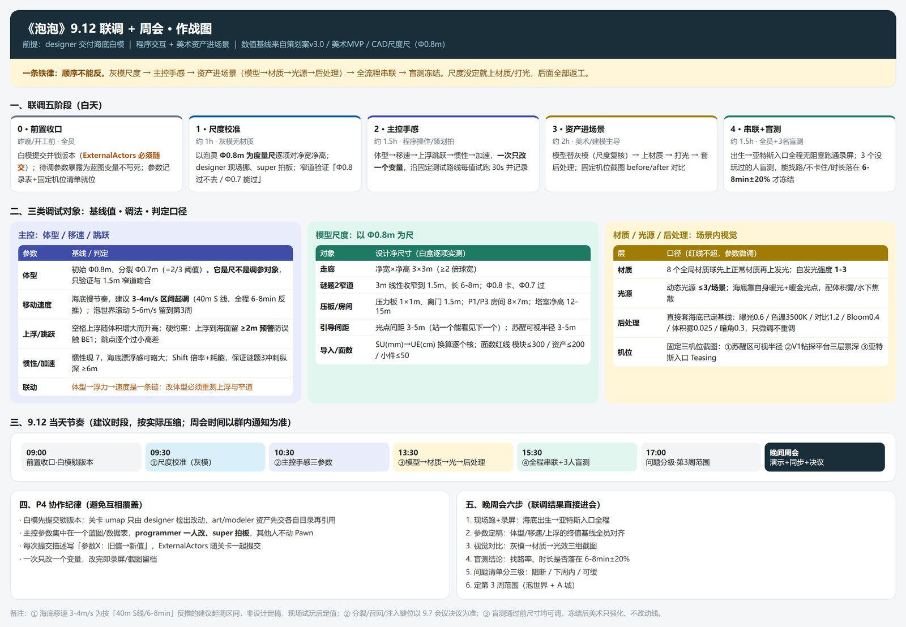
项目状态
- 2026.08.31 立项启动，完成 UE 工程搭建与目录规范
- 第 1 周 核心机制可玩 + 风格验证冻结：泡泡 Pawn 三操作、F 键分裂-召回-注入闭环、两类光点、体型与窄道判定
- 第 2 周 海底测试关卡可玩 + 空间叙事呈现验证：召回/注入、压力板开门、全流程联调、空间叙事走查
- 09.24 泡世界关卡设计升级五城版 v3.0，空间场景设计专项细化完成
- 09.26 泡世界 3D 资产生产清单 + Tripo AI 3D 资产生成管线落地；三城 MVP 空间设计 v4.0 定稿
- 09.27 泡灵资产命名与整理上传规范 v1.0 发布（团队执行版）
- 09.29 泡世界五城空间设计图（BWS-01~06）产出；场景设计讨论定调「三体舰队 + 盗梦空间 + 未来巨构」
- 09.30 地编会：UE5 场景搭建规范定案、追逐机制简化、泡世界重力反转设计、排期定案（10.7 内容封版）
- 10.01 音频音效落地：31 条占位音频生成并导入 UE（44 个音频资产），C++ 声音子系统实机验证通过
- 10.02 Tripo 3D 还原测试完成（碟形建筑多视角重建、面数对比、UE 导入验证）
- 10.05 世界观更新（人物档案 + 泡灵个体档案）、叙事动线 v1 定稿
- 进行中 内容制作冲刺：场景尺度放大、追逐与扫描机制落地、音频接线、泡世界白盒搭建；10.07 内容封版 → 10.08 QA/打包 → 10.09–10.10 比赛资料
作品信息
- 作品名：泡泡（Bubble）
- 类型：3D 探索解谜 / 叙事驱动 · Unreal Engine 5.8
- 角色：主策划 / 项目负责人（5 人团队）
- 周期：2026.08 至今 · 1 个月原型阶段 + 内容冲刺
- 原著：刘慈欣《山》
- 美术：纪念碑谷 Low Poly 风格化重构
- 音频：三种声学空间 · 31 条占位音效 · C++ 声音子系统
- 3D 资产：Tripo AI 生成管线 · 泡灵资产规范
- 技术栈：UE 5.8 · C++ / 蓝图 · Water 插件 · Niagara · Perforce